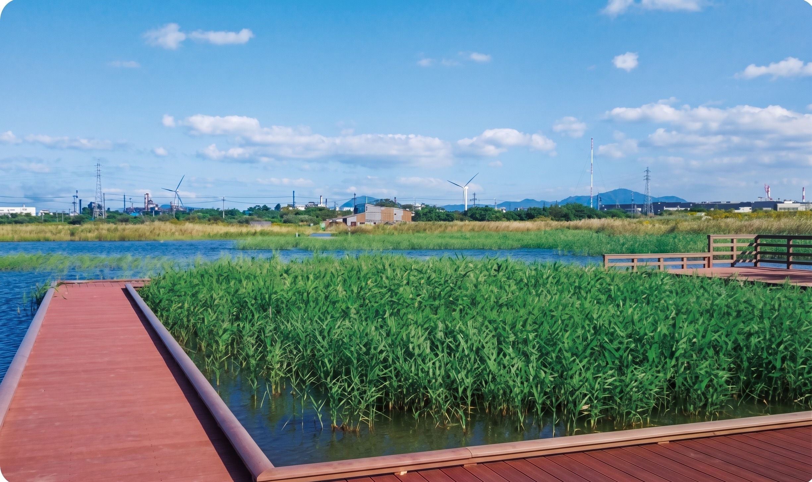
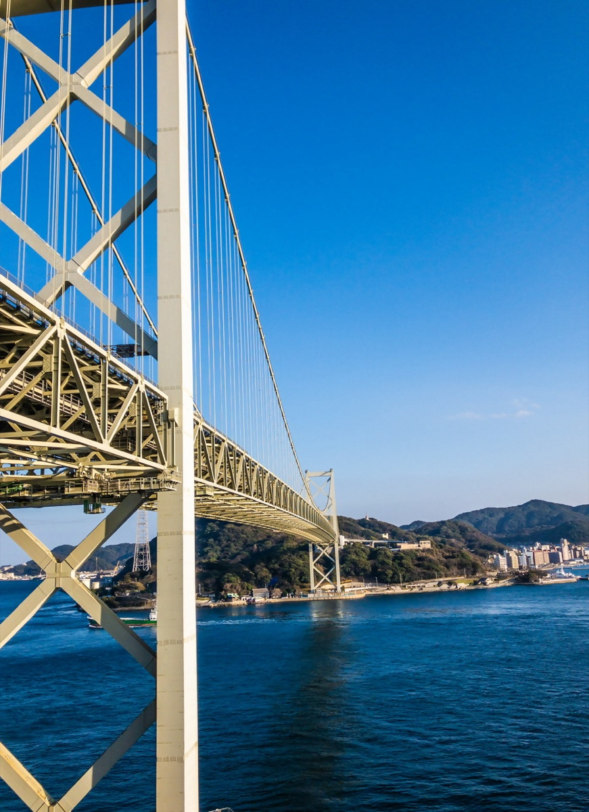

生物多様性の重要性
地球上には推定870万種の生物が暮らし、互いに複雑なネットワークで結ばれています。しかし今、人類の活動によって種の絶滅が加速し、「第6の大量絶滅」が進行中と指摘されています。現在の絶滅スピードは、自然状態の約100〜1,000倍に達すると言われています。
すべての命のつながりを守り、未来へ引き継ぐために
地球上には推定870万種の生物が暮らし、互いに複雑なネットワークで結ばれています。しかし今、人類の活動によって種の絶滅が加速し、「第6の大量絶滅」が進行中と指摘されています。現在の絶滅スピードは、自然状態の約100〜1,000倍に達すると言われています。
生物多様性は、大きく3つのレベルで捉えられます。
生態系は複雑な「つながり」で成り立っており、特定の種が消えると連鎖的に崩壊することがあります。生態学者ロバート・ペインが行ったヒトデの除去実験では、ヒトデを取り除いただけで岩場の生き物が15種から8種に激減しました。こうした生態系を支えるカギとなる種を「キーストーン種」と呼びます。
私たちの暮らしは、生態系が提供するさまざまな恵み（生態系サービス）に支えられています。これらのサービスは4つのカテゴリに分類されます。
生物多様性の保全に向けて、国際社会と日本では大きな制度・目標の枠組みが動き出しています。
豊かな自然を有する北九州市にも、生物多様性に関するさまざまな課題があります。
北九州市には、都市部から近い距離に多彩な自然環境が広がっています。これらは市民に身近でありながら、国際的にも評価される貴重な自然資源です。







これらの自然資源は、市街地から短時間でアクセスできることが最大の特徴です。市民が日常的に自然と触れ合える環境は、自然への理解と愛着を育み、保全活動の原動力となります。アーバンネイチャー北九州は、この「身近な自然」を核に、都市と自然が共生するモデルを推進しています。